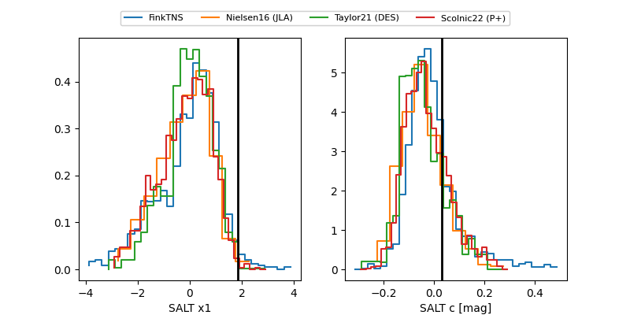

FINK: ZTF25absezpe
Lasair: ZTF25absezpe
ALeRCE: ZTF25absezpe
ZTF25absezpe (ztf,fink)
equatorial (ra, dec) = (50.0099,+2.44683)
galactic (l, b) = (179.3163,-43.57109)

last ztfg=20.23, ztfr=20.16
3 ztfg, 1 ztfr detections